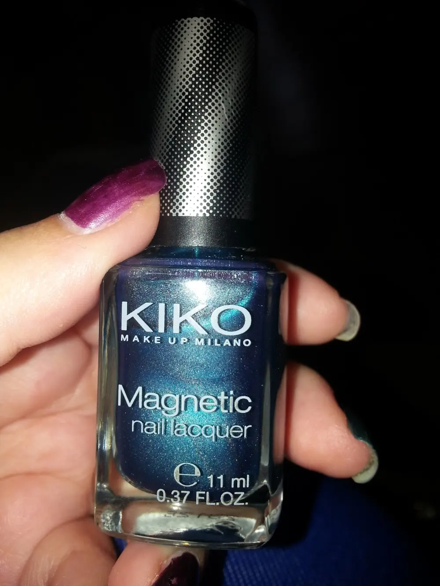
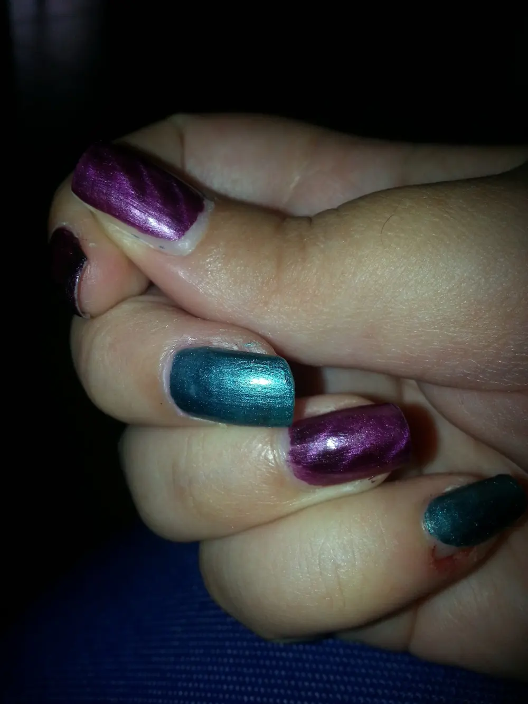

Kiko smalto magnetic nail Lacquer verde
Altro giro altra corsa ihihih
beh Sì, diciamolo sono impazzita per questi smalti kiko Magnetic Nail Lacquer.
In realtà oltre il colore viola mi hanno regalato anche un colore verde che è davvero bello.

Ho provato ad usare entrambi smalti a dita alternate e devo dire che l'effetto a me piace. .
A dirla tutta a me garbano più senza usare il magnete ihihih ma su qualche unghietta ci sta l'effetto..fa la nail art particolare..

Consiglio:
Volete un effetto “a maglia”? Dopo aver applicato lo smalto avvicinate il magnete per 4 secondi in direzione orizzontali, alzatelo e riavvicinatelo per altri 4 secondi in verticale. Ed ecco uno speciale e ricercato effetto a maglia.
Beh quindi sbizzarritevi.
Prezzo degli smalti nail Lacquer è di 4,90€
Prezzo del magnete è di 1,90 €